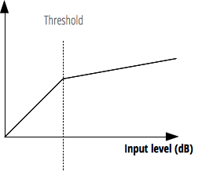

{{ APIRef("Web Audio API") }}
The threshold property of the {{ domxref("DynamicsCompressorNode") }} interface is a k-rate {{domxref("AudioParam")}} representing the decibel value above which the compression will start taking effect.
The threshold property's default value is -24 and it can be set between -100 and 0.

var audioCtx = new AudioContext(); var compressor = audioCtx.createDynamicsCompressor(); compressor.threshold.value = -50;
An {{domxref("AudioParam")}}.
Though the {{domxref("AudioParam")}} returned is read-only, the value it represents is not.
var audioCtx = new AudioContext(); var compressor = audioCtx.createDynamicsCompressor(); compressor.threshold.value = -50;
See BaseAudioContext.createDynamicsCompressor() for more complete example code.
{{Compat}}